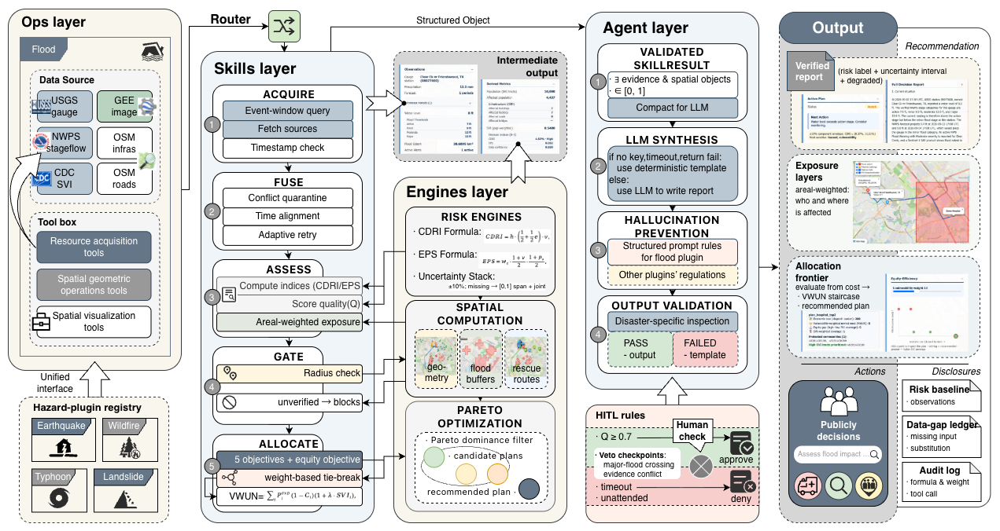

An Evidence-Grounded Spatial Agent for Disaster Response
Qiwen Bian (University of Pennsylvania) · Jiabei Xu (The University of Hong Kong)
OASIS ’26 · ACM SIGSPATIAL Student Challenge · Riverside, CA · November 2026
When the data breaks
A flood decision depends on many live data feeds — and they routinely break.
“When its data breaks, what should the agent decide by itself — and what must it hand back to people?”
While building this system, we occured failure in both directions:
A record flood was labeled “Low”
A dry day was labeled “High”
Same root cause both times: the system had no concept of whether its own evidence was trustworthy.
Why an agent at all?
The classic Wooldridge-and-Jennings definition — an agent is reactive, social, autonomous, proactive:
Reactive — senses a live environment
Social — interacts with human operators
Autonomous — runs around the clock
Proactive — recommends actions
Emergency response fits all four.
The real question is not whether to build an agent — it is how much autonomy to give it, and how to govern it.
The data environment is messy
One flood decision consumes
9 open data sources — river stage, weather, warnings, satellite flood maps, census, roads…
13 MCP servers — some servers fetch data; others process maps and draw charts.
Different formats, out of sync in time — on a bad night they are missing(no observation), stale(due to the time-window design), or contradicting each other(mismatch).
The two existing answers each fail
A dashboard treats “no data” as “no flood” — a silent zero
An autonomous LLM agent invents values for “no data” — hallucination
Tool choice is largely solved — planning aids improve accuracy by at most 3.24 %
Errors compound — the gap to expert solutions widens from 7 % to 56 % as the chain grows
Calling the right tool ≠ knowing the evidence is current, complete, and consistent.
In a disaster, the second question is the lethal one — so that is the one we designed around.
Our answer, in one line
Routine work runs itself. Value judgments stay with people. Broken evidence is recorded.
Three mechanisms enforce that line:
A deterministic pipeline — the LLM only renders verified results, with no tools to call. Output that breaks the rules is replaced by a fixed template. The LLM owns readability and reasoning, not the facts.
An evidence ledger — every number carries its source and time; a missing piece enters at a neutral value and the result is marked “degraded.”So we can avoid silent zero.
A human in the loop — the headline of the design (next slide)
Human in the loop — the headline
The system recommends, but not transmits. Mobilization always need a human in the loop.
Routine parameters auto-approve at evidence quality 0.7
Q = 0.40A + 0.30F + 0.25C + 0.05M
A (Source), F (Freshness), C (Completeness), M (Station verification)
Safety checkpoints — mobilization authorization, conflict escalation — time out in the denial direction.
How does our system work

Ops (tool servers & budgets) → Skills (one workflow per hazard) → Engines (deterministic math) → Agent (validated rendering & reasoning). A new hazard plugs in as a new skill.
Paper Fig. 1 — four-layer architecture and flood-skill data flow.
Study area: Friendswood, Texas, on Clear Creek — one government river gauge anchors the event
Allocation is capacity-aware: exposed residents are assigned to shelters & hospitals under capacity
The output is a set of plans with explicit trade-offs — save more · cost less · reach faster · protect the vulnerable
Every plan carries an equity view: who is covered, who is left behind
We tested failure handling
One dataset. Six faults. Three systems.
Zero-imputing dashboard — missing data becomes zero
Plan-then-execute agent — the strongest planning scaffold in DORA’s benchmark
Our system
We built two experimental baselines to compare failure handling.
Example faults: the station registry goes down · the map service places the gauge in the wrong city · the satellite scene is missing, or a month old.
Same faults, different behaviors
What breaks
Dashboard
Plan-then-execute (PE)
Our system
Station registry down
same confident number
5 more calls on a station it never verified
gap disclosed
Official thresholds missing
shows “Low”
4 more calls on broken context
escalated to a human
Gauge far from the target
same number
used wrong city’s data
stops — no plan at all
Satellite scene missing / old
exposed people = 0
exposed people = 0
disclosed estimate, marked degraded
The call sequence can not expose broken context — evidence state does. In our tests, our system will either stops a downstream product or labels it degraded on every fault.
Real events, replayed
Hurricane Harvey, 2017 (Development case)
Flood extent: 8.01 km²
Exposed residents: 5,527
CDRI: 11.15%
Risk: Very High
Tropical Storm Imelda, 2019 (Held-out event)
Flood extent: 7.85 km²
Exposed residents: 6,211
CDRI: 5.79%
Risk: High (degraded)
A dry control day (Control event)
Flood extent: unavailable
Exposed residents: not reported
CDRI: 0.0%
Risk: Low (degraded)
Paper Fig. 2 — Flood extent, exposure, facilities, and capacity-aware assignments.
Honest boundaries & Future works
One flood workflow, one municipality
Facility capacities come from a manual table → every allocation is a recommendation, not a command
Community voices are not yet part of what counts as a good plan
These boundaries are part of the philosophy: the system would rather say it doesn’t know.
When the data breaks, what should the systems say?
A dashboard says zero.
An autonomous agent makes something up.
A system that can support real decisions must say three things:
Which data breaks. What can still be trusted. Which step needs a human decision.
Autonomy inside an evidence cage — the agent recommends, authorization stays with people.